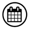

Earvin Ngapeth
-
Français
-

12 février 1991
-
3 Participations
-
Ligue des Nations de volley-ball (2023)
Présentation
Earvin Ngapeth, né le 12 février 1991 à Saint-Raphaël, est un joueur international français de volley-ball évoluant au poste de réceptionneur-attaquant au Stade Poitevin Volley-Ball. Son père est Éric Ngapeth, ancien joueur international français de volley-ball. Son frère cadet, Swan, est également joueur de volley-ball.
Formé à Poitiers, Earvin Ngapeth commence sa carrière à Tours, avec son père comme entraîneur, alors qu'il a 17 ans. Il y remporte deux titres de champion de France et trois Coupes nationales. En 2011, il part à l'étranger, à Coni en Italie, où il connaît une première finale de Ligue des champions en 2013. Il retrouve alors son père entraîneur à Kemerovo en Russie, où il ne reste que quatre mois, rentrant à Poitiers pour assister à la naissance de son premier fils. Il part ensuite pour quatre saisons au Modène Volley une équipe d'Italie, remportant un titre de champion et deux Coupes. À l'été 2018, il retourne en Russie, au Zenit Kazan alors considéré comme le meilleur club du monde mais avec qui il perd plusieurs finales et ne gagne qu'une Supercoupe et une Coupe. En 2021, il revient à Modène.
Il remporte la médaille d’or avec l’équipe de France aux Jeux olympiques de Tokyo 2020 et Paris 2024. Il est désigné meilleur joueur de ce tournoi par la FIVB et MVP de la finale pour la médaille d’or face au comité olympique russe. La FIVB le désigne meilleur joueur du monde au début de la saison suivante.